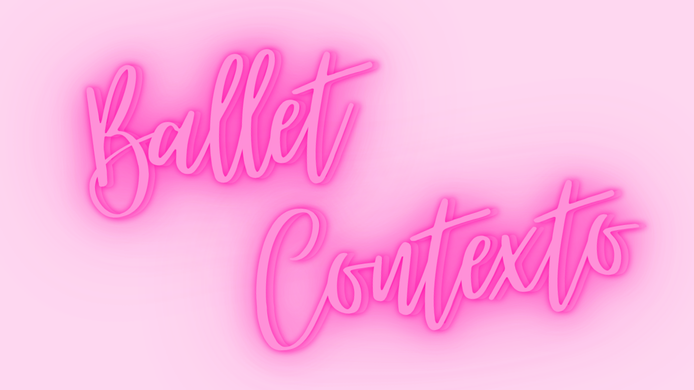

Meu nome é Mariana e eu gosto de ballet desde que me conheço por gente. Não sou uma bailarina profissional e atualmente faço faculdade de ciência da computação na SPTech, mas sou curiosa e uma entusiasta do ballet. Então, quando minha professora de PI solicitou para criarmos um site que mostrasse um pouco de nós, a primeira coisa que me veio em mente foi o Ballet.
Comecei a fazer aulas com três anos e, por mais que o meu objetivo no ballet tenha mudado ao longo do tempo, é algo que eu não me vejo sem. E é disse amor e do meu amor por conhacimento nasce o Ballet&Contexto, um site com conteúdos sobre ballet, testes de conhecimento e uma forma de a companhar o seu desenvolvimento, nossa Dashboard.
Cadastre-se e aproveite de todos os nossos conteúdos!!

O ballet surgiu durante o período do Renascimento, na Itália, no século XV, como uma forma de entretenimento nas festas da nobreza. Mais tarde, foi levado para a França, onde se desenvolveu e ganhou regras e técnicas próprias. No século XVII, o rei Luís XIV ajudou a popularizar essa arte ao criar a primeira escola oficial de dança. Com o passar do tempo, o ballet se espalhou pelo mundo, evoluindo para diferentes estilos e se tornando uma das formas de dança mais conhecidas e admiradas, unindo técnica, expressão corporal e arte.
Lago dos Cisnes é um dos ballets mais famosos do mundo, criado pelo compositor Piotr Ilitch Tchaikovsky. A história conta a jornada do príncipe Siegfried, que se apaixona por Odette, uma princesa transformada em cisne por um feitiço. Para quebrar o encanto, ele precisa jurar amor verdadeiro, mas acaba sendo enganado pelo vilão e enfrenta desafios para salvar sua amada.
%20ROH%2C%202019.%20Photographed%20by%20Bill%20Cooper.%20(3).jpg)
Coppélia é um ballet divertido e encantador que narra a história de Swanilda e Franz, um jovem casal. Franz se encanta por Coppélia, uma bela moça que aparece na janela de uma oficina, sem saber que ela é, na verdade, uma boneca mecânica criada pelo misterioso doutor Coppélius. Com humor e confusões, o ballet mostra como Swanilda descobre a verdade e reconquista o amor de Franz.